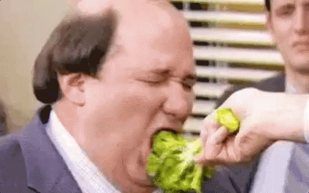

Na Clínica DBem Quavida, sabemos que cuidar da saúde é muito mais que atendimento médico. Por isso, disponibilizamos, ao longo de todo o tratamento, acompanhamento gratuito com nutricionistas para todos os pacientes!

Voltar à pagina inicial